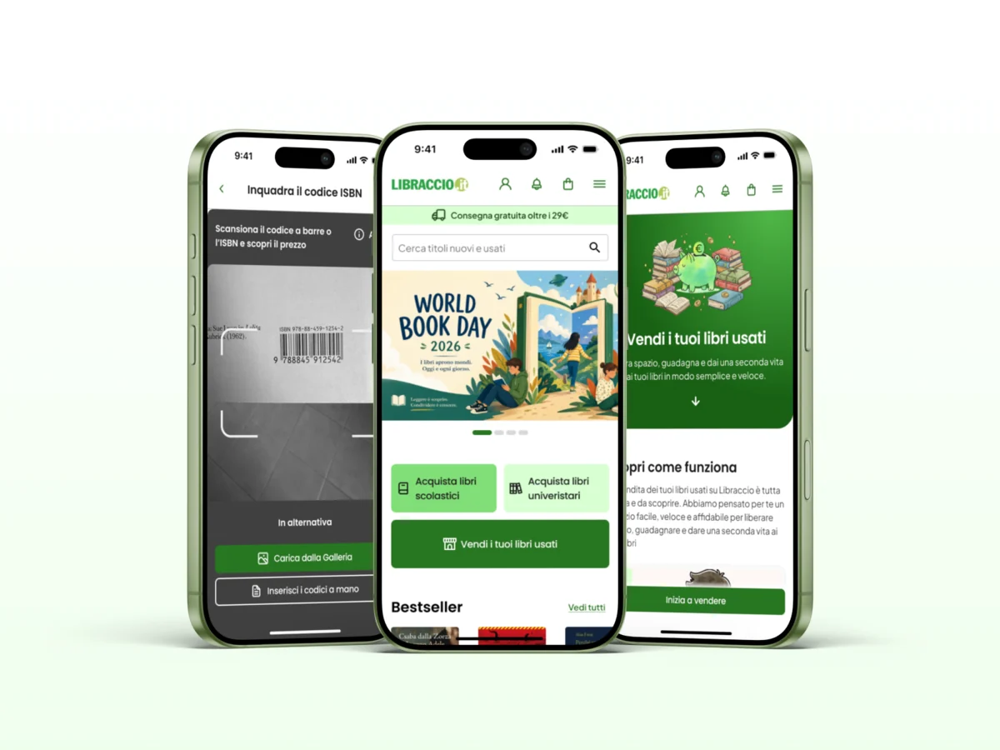
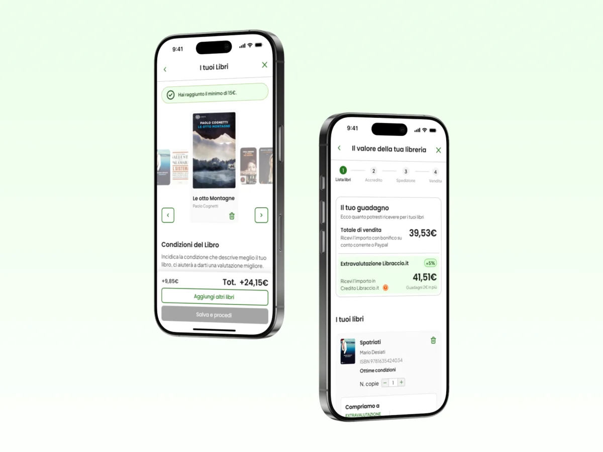
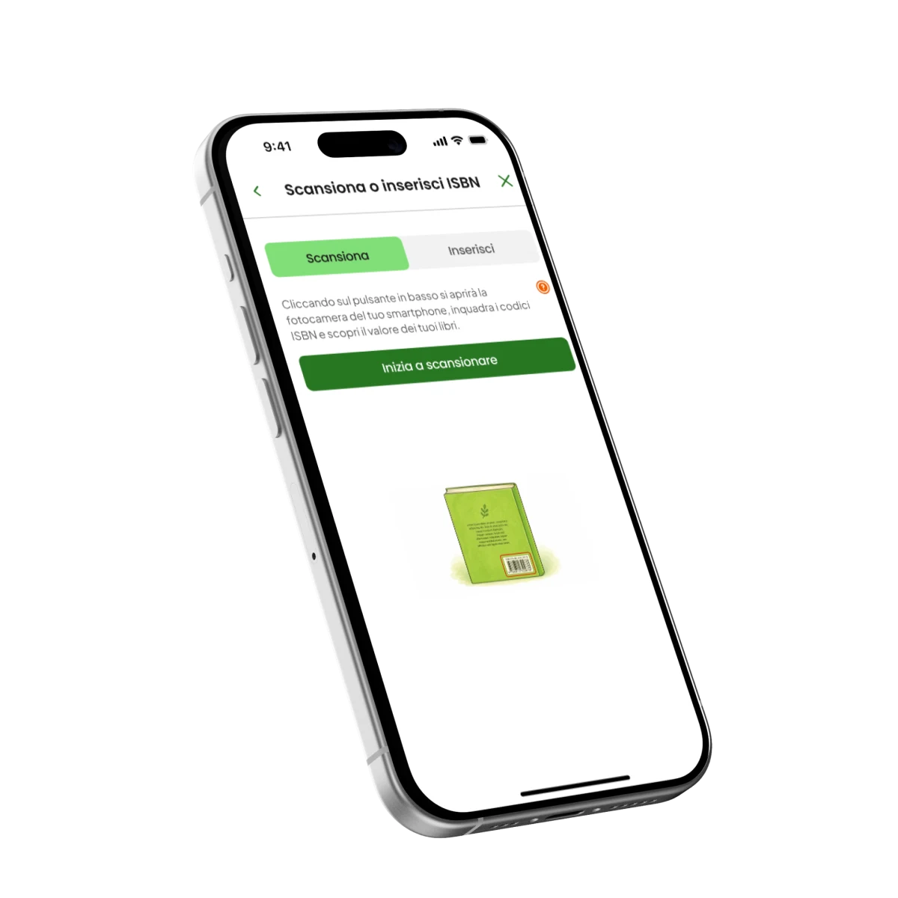
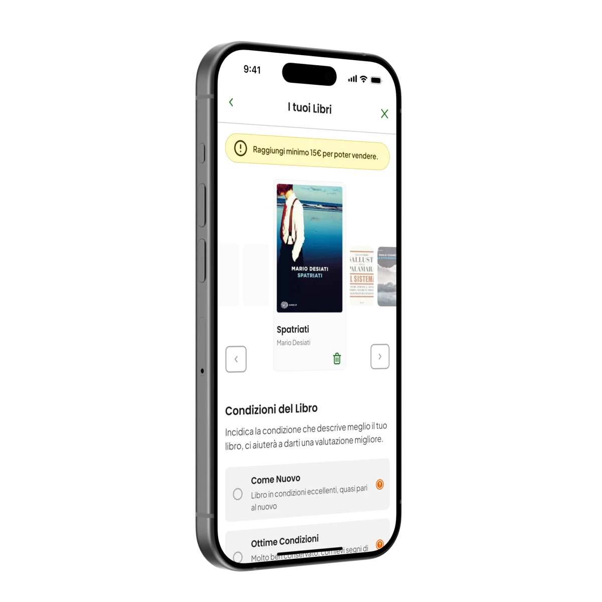
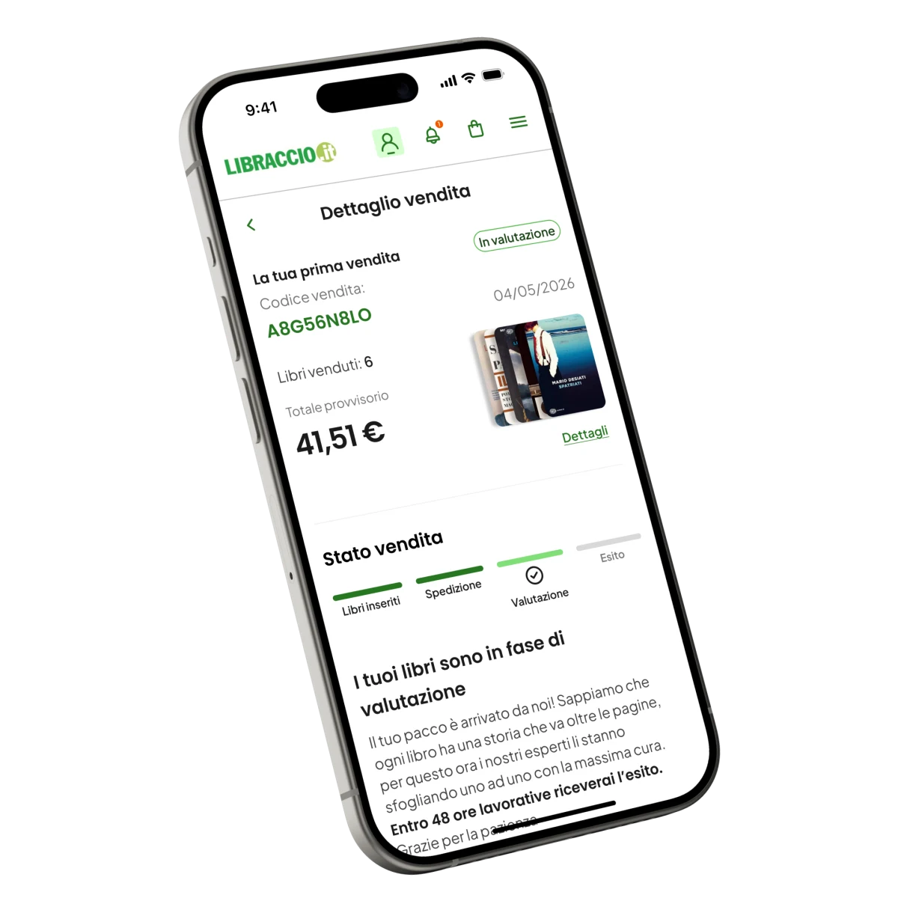
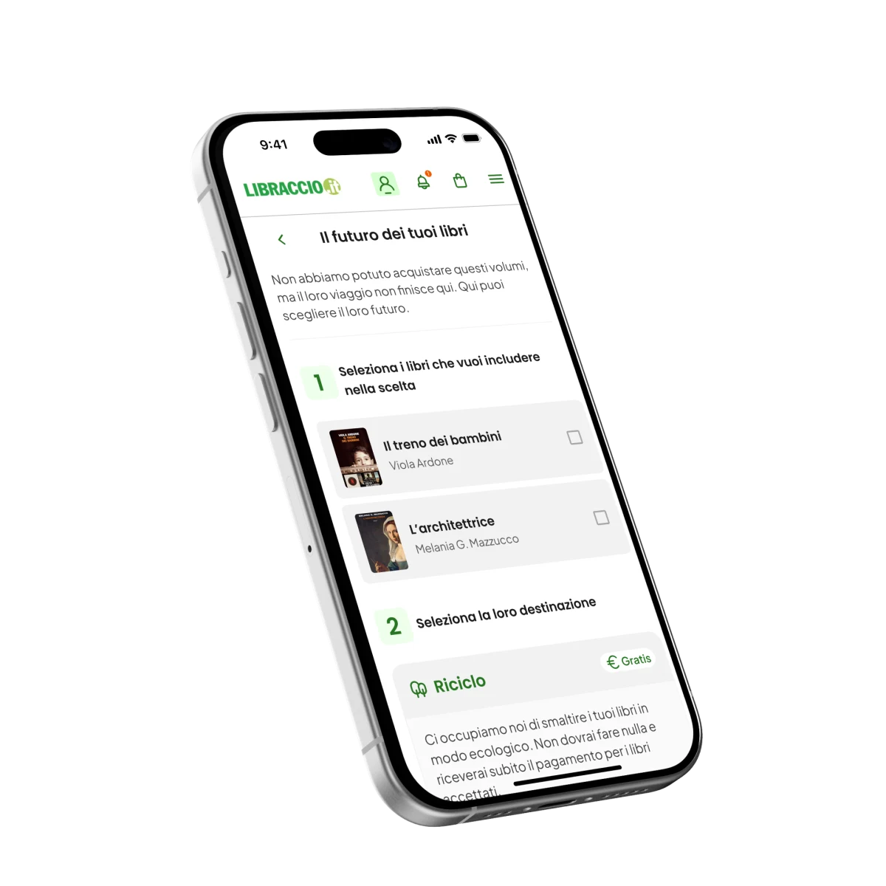
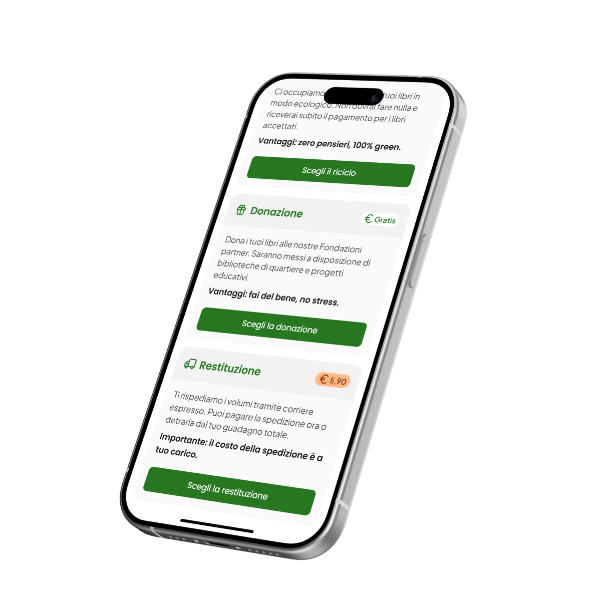
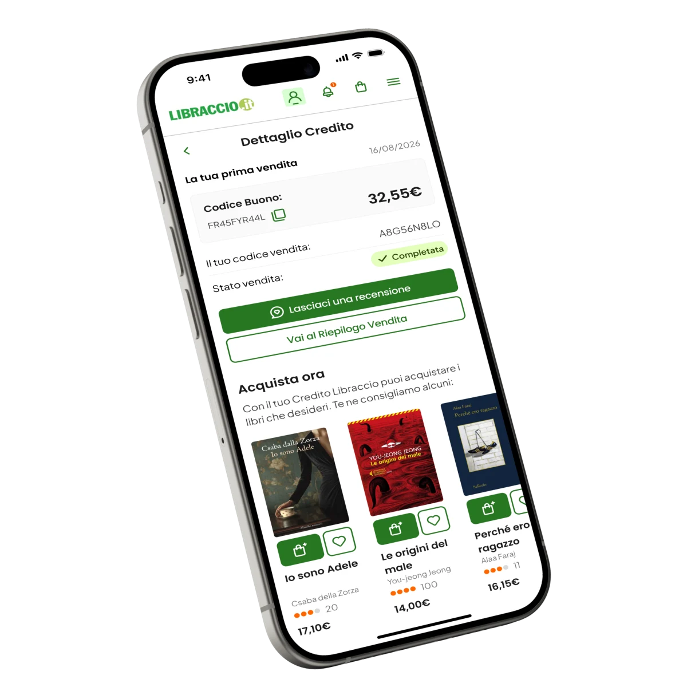

Davide, 22
Lo studente fuorisede
«Non mi serve? Lo vendo. Subito, al prezzo migliore.»
Talent Garden Innovation School × Libraccio.it

01 — La sfida
Il brief chiedeva di riprogettare il flusso di vendita C2B per renderlo più usabile e mobile-first. Leggendo le recensioni su Trustpilot abbiamo trovato il dettaglio che ha spostato la diagnosi: i libri giudicati non idonei non venivano restituiti, e l’utente restava senza spiegazioni, in un buco nero. Una cosa che il servizio dichiara, ma sepolta nel flusso dove nessuno la legge.
Da lì abbiamo riletto tutta la ricerca sotto un’altra lente: il problema non era l’usabilità, era la fiducia. Non è un dato che emerge da solo dai numeri — è un’interpretazione, ed è la decisione che ha dato forma a tutto il resto del progetto.

02 — Cosa serve agli utenti
Lo studente fuorisede
«Non mi serve? Lo vendo. Subito, al prezzo migliore.»
La madre di famiglia
«Devo liberare spazio, ma non ho tempo da perdere: se funziona, lo faccio.»
La lettrice consapevole
«Non vendo per liberarmene, ma per dargli una seconda vita.»
Il designer curioso
«Se non mi rappresenta più, lo rivendo: deve stare al passo con i miei interessi.»
03 — Le criticità
Alto carico cognitivo, attriti tecnici (ISBN digitato a mano), punto d’ingresso invisibile, CTA senza gerarchia, vicoli ciechi nel flusso. Conseguenza: confusione prima ancora di iniziare.
Valutazione percepita come «scatola nera», rifiuti senza spiegazione, libri non restituiti, credito poco valorizzato. Conseguenza: sfiducia nel brand.
La prova: gli utenti sceglievano Vinted pur dovendo fare più lavoro, perché si fidavano di più. La frizione non era il problema — era amplificata dalla sfiducia.
04 — La soluzione
Il modo più semplice e veloce di mettere in vendita: apri la sezione vendita, scansiona il codice a barre e ottieni una valutazione immediata. Elimina la digitazione manuale del codice a 13 cifre, principale attrito tecnico del flusso.

L’utente dichiara lo stato del libro già in fase di inserimento: la valutazione è chiara fin dall’inizio, non una sorpresa a spedizione avvenuta. Una base equa che costruisce fiducia.

Lista libri → valutazione → spedizione → esito: l’utente sa sempre a che punto è e cosa fare dopo. Nessuna etichetta da stampare: basta il QR. Tempi chiari e libri accettati, rivalutati o rifiutati sempre visibili.

Per i libri non accettati l’utente sceglie cosa farne: donarli, riciclarli o riceverli indietro pagando la spedizione. Riprende il controllo — sparisce la sensazione di «sequestro» — e Libraccio non si fa carico della spedizione di ritorno automatica. La gerarchia delle opzioni nasce dall’equilibrio tra bisogno dell’utente e sostenibilità per il business, non dall’ottimizzare un lato solo.
Il mio contributo qui è stato porre due vincoli di realtà: non tutti i libri si possono donare (se un libro è illeggibile, l’opzione non ha senso), e l’identificazione delle condizioni deve restare semplice anche per chi valuta i libri dal lato operativo.


Ricevere il pagamento in credito diventa un vantaggio reale: oltre a un bonus del 5%, include la spedizione gratuita. Il saldo è nel «Portafogli», con consigli d’acquisto personalizzati. Il buono passa da vincolo percepito a incentivo concreto.

Costi, soglie e commissioni compaiono al momento giusto del flusso, non nascosti in pagine secondarie.
A fine processo l’utente vede l’esito dettagliato, libro per libro: la «scatola nera» diventa un conto chiaro.
Micro-feedback lungo il flusso che costruiscono il legame con l’utente invece di accumulare ansia.
05 — Cosa ho imparato
06 — Il team